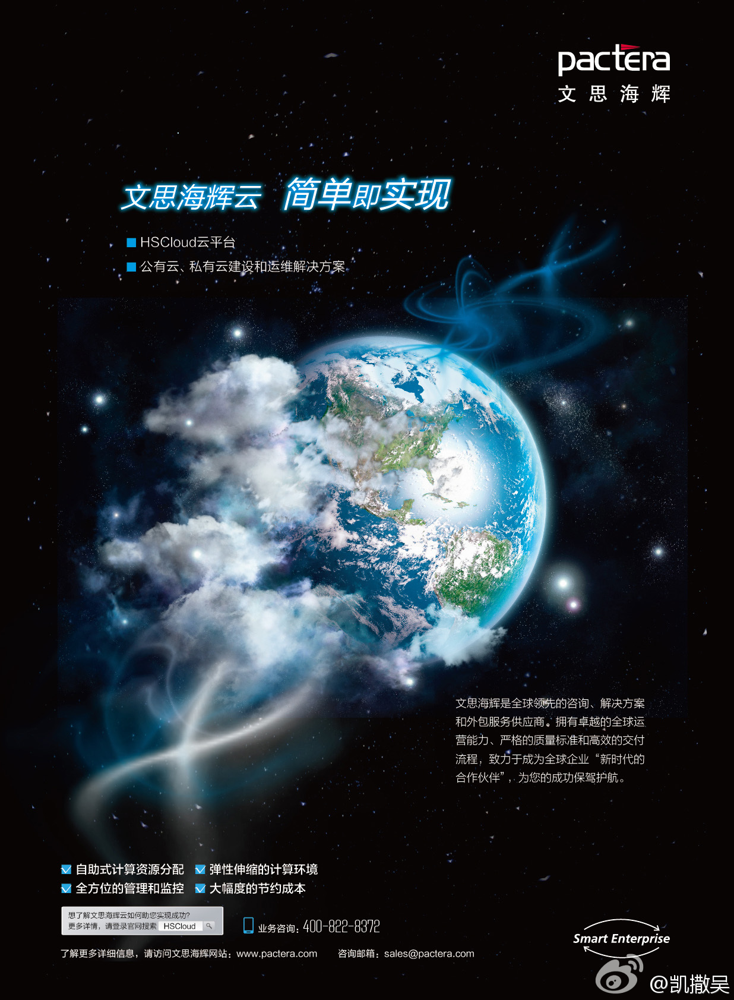
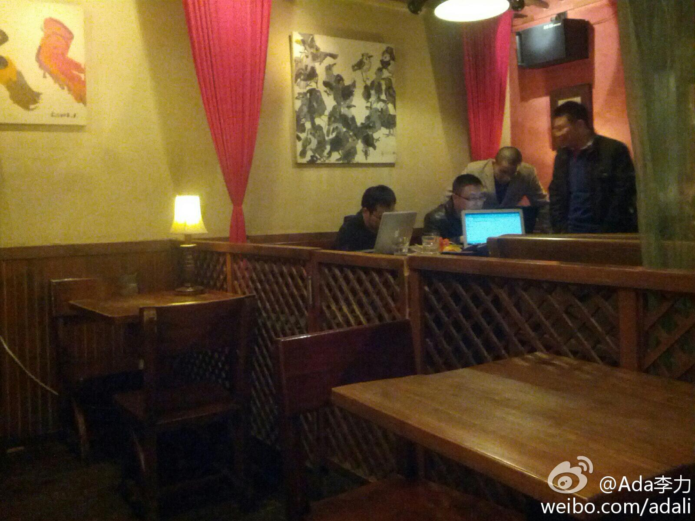

吴凯原来也是从外企到民企的。@凯撒吴:@CSDN云计算 今日头条-从打造国内最大的OpenStack公有云开始！从HP到海辉，已跻身SVP的吴凯看到了光鲜背后外企的落寞大幕，也预见到国产软件机会。他追随孙振耀来到海辉，尽管酒店从五星级变成了如家，步入不惑之年的吴凯却找到了创业的冲劲，借助OpenStack把握了云计算的机会。 网页链接 
回复@少年振南:大家都会“脚踩两条船”。 //@少年振南:奇怪了，他们学习cloudstack学的如火如荼的啊 //@Ada李力:吴凯原来也是从外企到民企的。@凯撒吴:@CSDN云计算 今日头条-从打造国内最大的OpenStack公有云开始！从HP到海辉，已跻身SVP的吴凯看到了光鲜背后外企的落寞大幕，也预见到国产软件机会。他追随孙振耀来到海辉，尽管酒店从五星级变成了如家，步入不惑之年的吴凯却找到了创业的冲劲，借助OpenStack把握了云计算的机会。 网页链接
来五道口看个来北京出差的大学同学。地图上查到附近咖啡馆很多。之前在附近清华科技园里工作五年，几乎没去过这些咖啡馆。可见，物理距离不是主要因素，心境才是主因。 我在这里:北京·卡瓦小镇咖啡馆 CAVA COFFEE(五道口店) 